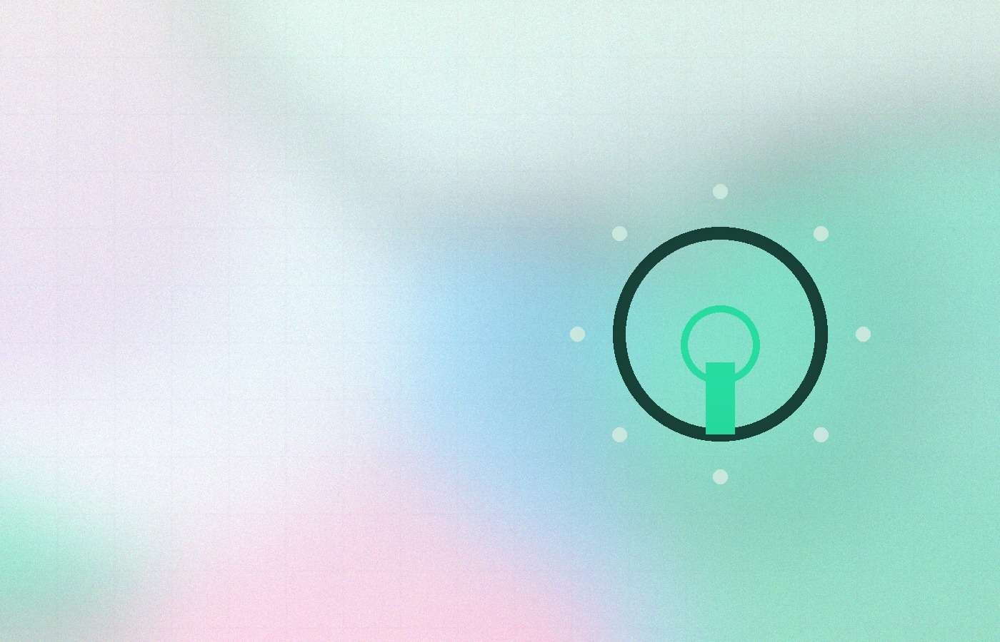

Yükleniyor…
Yazı içeriği birkaç saniye içinde ekranda görünür. Görünmüyorsa sayfayı yenileyebilirsiniz.
Yükleniyor...Kürşatcan Çankaroğlu
İhtiyacınızı hızlıca netleştirip, sürdürülebilir bir çözüm planı çıkarırım. Temiz kod, güvenlik ve performans önceliğimdir.


Yazı içeriği birkaç saniye içinde ekranda görünür. Görünmüyorsa sayfayı yenileyebilirsiniz.